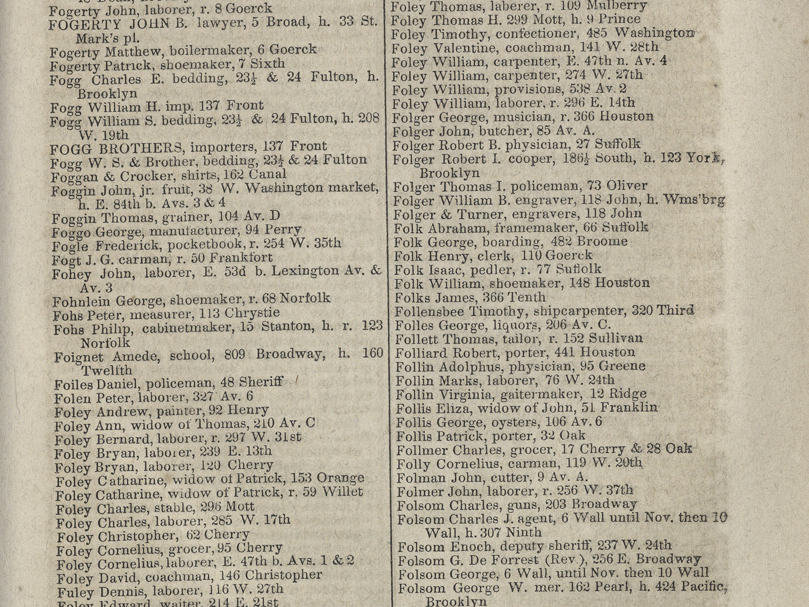

NYPL Labs
Space/Time Directory
How did my street look in the 1920s?
On which cemetery are my ancestors buried?
Do you have maps of my house around 1900?
Our search engine:
The NYPL has the materials (and librarians!) you need to answer those questions
NYPL Labs: from the stacks to the internet
First step: digitizing
Second step: from images to data
Great! More data! And even more silos...
In comes:
NYC Space/Time Directory!
Combine NYPL's collections and data — through space and time!
New crowdsourcing tools:
Goals: open data, plain text files, for everyone to download
Goals: APIs, open source, search tools, user interfaces
Example:
Georectified maps + Building Inspector +
OCR'd city directory = graph of addresses & people

Help us! Internships? Meetups? Fellowships?